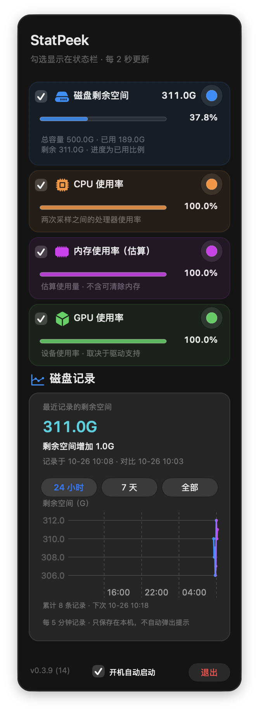
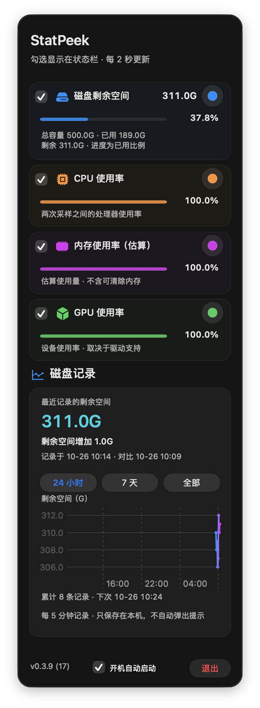

StatPeek · 界面细节前后对比
2026-10-26 · 0.3.9 (14) → 0.3.9 (17)。原始原生窗口截图，不加滤镜；独立窗口使用合成指标与临时历史库，未经用户桌面输入操作。浅／深色、四档可用高度和滚动位置共 20 组。
- 减轻彩色卡片和进度条的轮廓，保留指标配色。
- 收紧磁盘卡片留白，统一历史区内边距，增大主读数及底部说明。
- 辅助文字根据实际外观动态解析，改善深色玻璃上的可读性。
调整前 · Build 14
调整后 · Build 17
长窗口使用 1378 点可用高度；736 / 568 / 448 为短屏滚动检查，top / middle / bottom 为对应滚动位置。数值与时间为独立测试夹具，构建、安装和数据保留另见验收记录。通过 完整窗口和文字测量记录可核对尺寸与非激活状态。